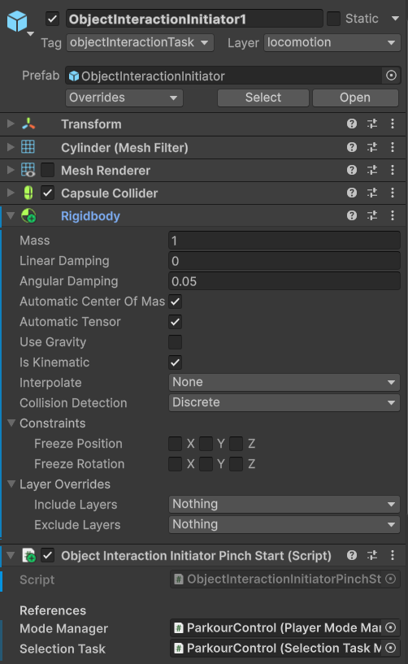

Jan Second Half: Interaction Task
Last week I ended with: “I haven’t started the interaction task at all and it’s making me anxious.” Yeah… that anxiety aged like milk. Because the interaction task turned out to be two separate problems hiding behind one :
- How do I even start the task?
- How do I disable locomotion so I don’t drift away while trying to fit a T inside a hole like a stressed-out toddler?
This post is basically how I made the “T shape puzzle” work end-to-end: 1. enter checkpoint 2. pinch to start 3. manipulate object 4. pinch hold to finish 5. return to locomotion.
The “weird start block” was a trigger station (not a button)
I kept thinking there’s a physical start button I’m supposed to grab (because there is that tiny block sitting there). But in my build, grabbing it wasn’t realistic since my hands were already mapped to locomotion gestures.
So instead of fighting the tiny button, I made the checkpoint behave like a proper “VR station”:
- the checkpoint object is still a trigger volume (so it knows when I arrived)
- entering it only shows the UI (“Pinch to start”)
- I added “pinch to start” as the actual trigger (so I can start reliably without UI clicking)
That small change basically made the whole task usable. I tried a whole set f different gestures t trigger it but the pinch was the most reliable ne. So i sticked with it.

Important detail: I learned it the hard way that triggers in Unity can be annoying if no Rigidbody is involved. So each initiator got:
- CapsuleCollider →
Is Trigger = true - Rigidbody →
Use Gravity = false,Is Kinematic = true
This way the station better detects the player entering.
Starting the task: pinch to make the two T objects appear
I created a tiny starter script and slapped it on each trigger station (ObjectInteractionInitiator1/2/3).
Logic:
- if I’m inside the station
- and I do an index pinch
- then start the task + switch mode to interaction
Also: I fixed a subtle bug from my older logic. My AvatarTriggerEnter() was setting isTaskStart = true immediately on entering the zone. That meant timing could start before the task actually starts (while I’m still reading “start”). I changed it to only start timing on pinch.
This is the core idea of the pinch start :
modeManager.SetMode(PlayerMode.ObjectInteraction);
selectionTask.isTaskStart = true;
selectionTask.isTaskEnd = false;
selectionTask.StartOneTask();
So now entering the zone is just “ready state”, pinch is the real “go”.

The most annoying part: locomotion wouldn’t stop
Even after starting interaction, my avatar was still moving because… of course it was.
I originally disabled “Player Locomotor”, but my actual movement logic is in my big custom script LocomotionTechnique attached to OVRCameraRig. So locomotion kept reading hand input and pushing the Rigidbody.
The fix was very simple in hindsight:
- put LocomotionTechnique inside
PlayerModeManager → locomotionBehaviours[] - put
ObjectTInteractionControllerinsideinteractionBehaviours[]
Now switching mode actually disables the right components. This took the majority of my time during the third week since fugure out th logic was not easy. :D
Also, I added a small “stop momentum” so the avatar doesn’t keep sliding after the switch.
Interaction controls: make it feel POV-based, not world-based
The original swirl translation idea worked… but it was not precise and it felt one-direction-y.
So I changed the control mapping to something that makes more sense to us mere mortals:
Left hand (rotation)
- Left index pinch + rotate wrist
- rotation is slightly adjusted in camera yaw space so it feels POV aligned (less “why is it rotating like that?”)
Right hand (translation)
-
Right index pinch + tilt moves the object in XZ plane relative to my POV
- tilt forward = push away
- tilt back = pull towards me
- tilt right = move right
-
Right middle pinch + lift/drop hand moves the object up/down (Y axis)
And because wobble was a thing, I added smoothing + deadzone, so tiny wrist noise doesn’t jiggle the object constantly.
Finishing the task
I also needed a clean way to end the task and go back to locomotion.
I didn’t want a button UI, because:
- I’m already using hands for movement
- UI clicking in VR is pain
- I just want something reliable
So I added: hold BOTH index pinches for approx 1s to finish
This calls:
selectionTask.EndOneTask()- switches mode back to locomotion
The essential part :
if (selectionTask) selectionTask.EndOneTask();
if (modeManager) modeManager.SetMode(PlayerMode.Locomotion);
Now the task loop feels complete: 1. start 2. manipulate 3. finish 4. return
One tiny change that made it so much better: hide the avatar
My avatar body was blocking the view while doing the puzzle. Like, my own shoulders were the final boss like in dark souls where the camera is sometimes the villain.
So during interaction mode I hide the avatar renderers (not the collider / rigidbody, just the visuals). That alone made the puzzle feel way less claustrophobic.
Tiny bug fix but took me a day to figure out
my avatar didn’t come back after exiting the puzzle, it was as if it completely disappeared even tho I could move normally with my two hand gestures. This was because the interaction script got disabled before it could re-enable the renderers. Adding
OnDisable()
{
SetAvatarVisible(true);
}
fixed it instantly.
Where things stand now
The interaction task is finally real and playable:
- enter checkpoint → UI appears
- pinch → spawns object + target
- locomotion disables cleanly
- I can rotate + translate the T piece precisely
- hold both pinches → task ends and locomotion returns
- avatar doesn’t block my view anymore
This was one of those hard weeks, but it’s also the first time the project feels like kinda close to the finish line.
Next up: making the interaction feel even more natural, and cleaning up the code.
Cheers, Ajay